Концепт «Музыкальный плеер эпох»
Концептуальное мобильное приложение, объединяющее легендарные музыкальные устройства прошлого в формате современного цифрового плеера, превращая процесс прослушивания музыки в атмосферное путешествие по эпохам.
 Открыть в Figma
Открыть в Figma
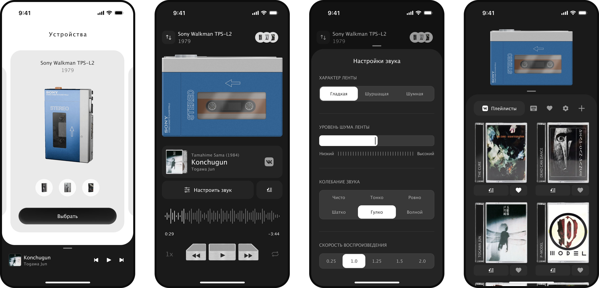
01.
О проекте
Целью задания было спроектировать мини-приложение, которое погружает пользователя в эстетику разных музыкальных эпох: от виниловых проигрывателей и кассетных плееров до iPod Classic, при этом сохраняя удобство и логику современных UI-паттернов. В процессе работы я вручную воссоздала визуальные образы культовых музыкальных устройств, продумала сценарии взаимодействия, а также добавила анимации.
02.
Задача

Передать характер и эстетику разных музыкальных форматов.
Сохранить понятный и привычный пользовательский опыт.
Объединить разные устройства в единую логику продукта.
Создать выразительный визуальный стиль без перегруза интерфейса.
Предложить уникальные фичи, усиливающие идею проекта.
03.
Ограничения и сложности
Mobile first. Все сценарии и визуальные решения проектировались под мобильный экран.
Баланс между ретро и современностью. Важно было не скатиться в декоративный «музей» без удобного UX.
Разные физические интерфейсы устройств. У каждого плеера свои кнопки, логика и отображение информации.
Анимации. Нужно было встроить их в пользовательский флоу, не замедляя взаимодействие.
Ограничение по времени презентации. Требовалось донести сложную идею максимально ясно.
04.
Исследование
На этапе исследования я сосредоточилась на культовых устройствах, которые стали символами своих эпох:
Technics SL-1200 — икона виниловой культуры.
Sony Walkman TPS-L2 (1979) — первый массовый портативный кассетный плеер.
Sony Discman D-121 — символ эпохи CD.
iPod Classic — переход к цифровой музыке.
Я изучила:
Внешний вид устройств.
Механику взаимодействия.
Особенности отображения информации.
Характер звучания каждого носителя.
На основе этого исследования были выбраны конкретные модели, которые стали основой визуального и UX-решений.
05.
Визуальный стиль
Визуальный стиль проекта строится на сочетании:
Реалистичных иллюстраций устройств.
Стилизованных носителей.
Чистой современной верстки.
Я вручную отрисовала устройства в Figma (кроме iPod Classic), создав несколько состояний, например: открытая и закрытая крышка, наличие или отсутствие носителя, активное воспроизведение.
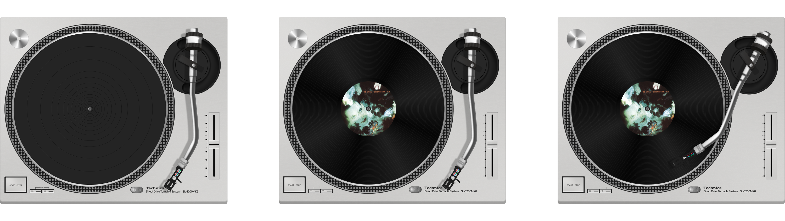
Technics SL-1200 (1972 г.)
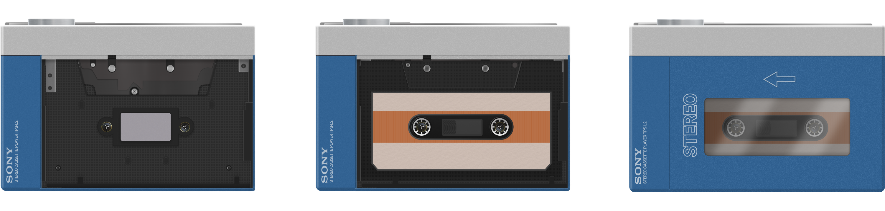
Sony Walkman TPS-L2 (1979 г.)
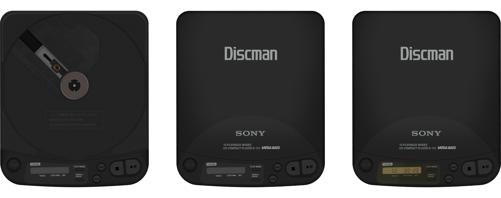
Sony Discman D-121 (1990 г.)
Сгенерировала обложки плейлистов, они адаптируются под выбранный формат:
Кассеты — в виде физических кассет.
CD — в формате дисков.
Винил — как пластинки с конвертами.
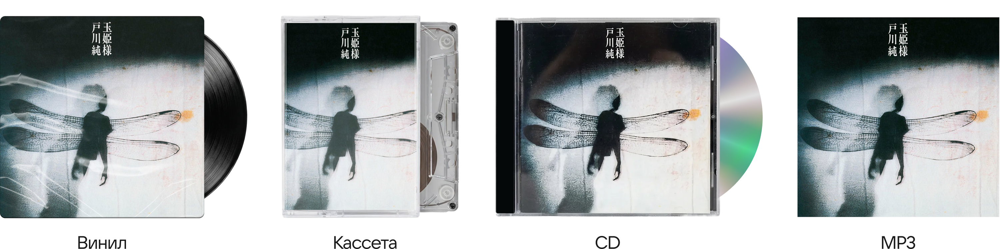
06.
Дизайн
Демонстрация основного сценария приложения
В результате получились следующие основные экраны: выбор устройства → плеер → настройка звука → выбор плейлиста.
Главный экран
На главном экране пользователь выбирает устройство. Листать карточки с устройствами можно горизонтальным свайпом. Также предполагается возможность выбрать разные модели одного типа устройства.
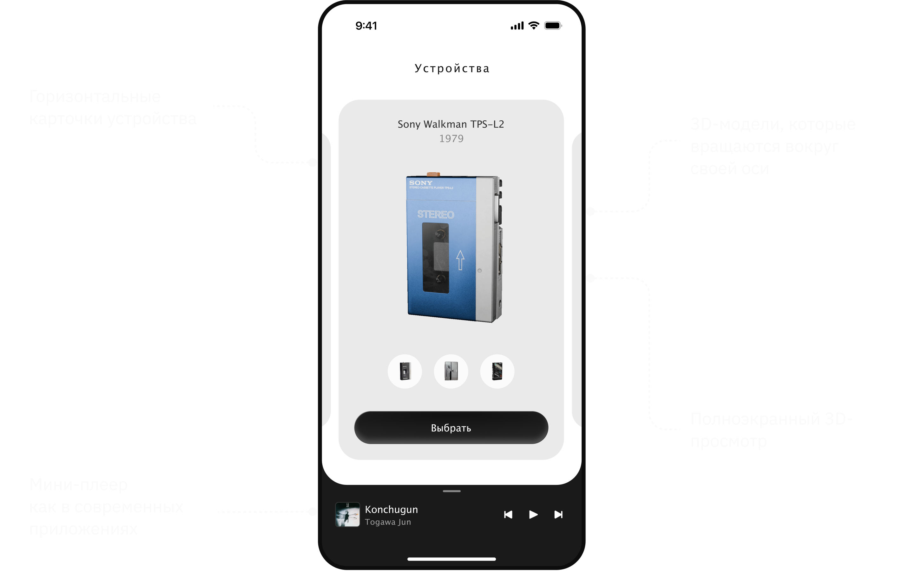
Для выбора доступны устройства от винилового проигрывателя до iPod Classic. Все устройства это 3D модели, которые я нашла в открытом доступе. iPod Classic сделала сама в Blender. Эти устройства я анимировала, чтобы они крутились вокруг своей оси, создавая впечатление, что это экспонат на витрине музея.
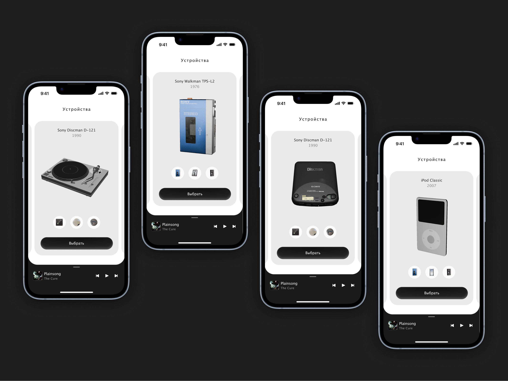
После нажатия на устройство, откроется 3D пространство, где можно взаимодействовать с устройством (покрутить проигрыватель, понажимать на кнопки, посмотреть поближе).
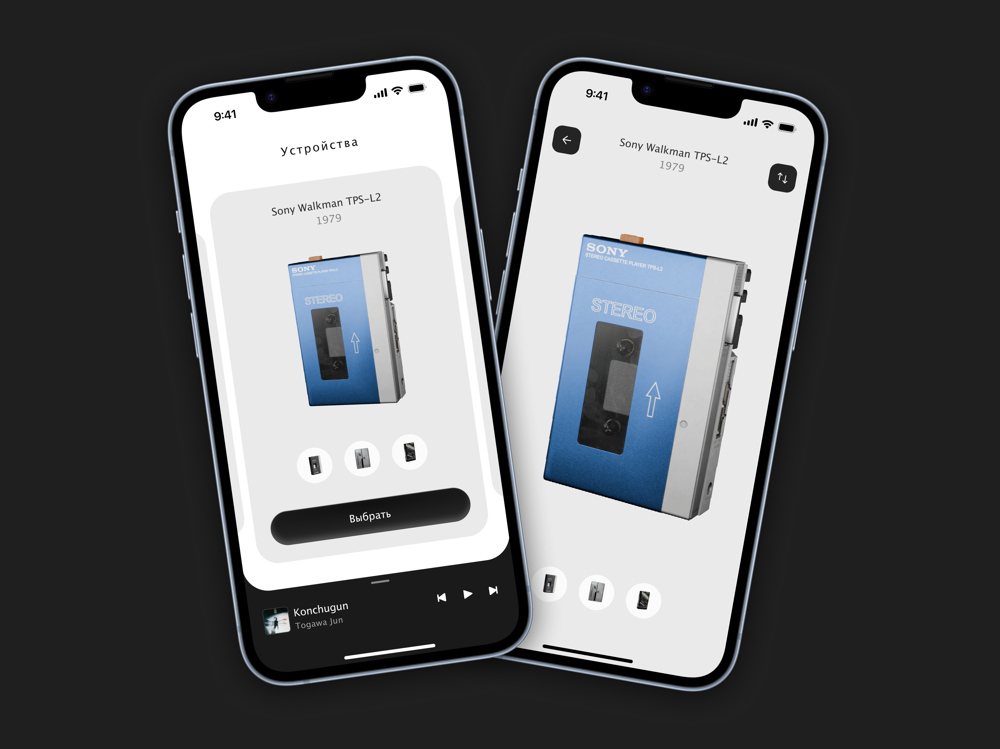
Экран плеера
На экране плеера есть выбранное устройство и стилизованные кнопки и другие элементы. При взаимодействии с альбомами и песнями, меняется состояние устройства (закрыта крышка или открыта при выборе альбома, вращение плёнки при воспроизведении музыки).
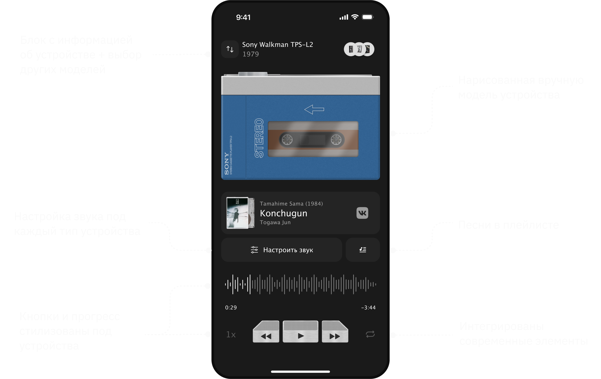
Работа с плейлистами
После нажатия на плейлист, появляется область с выбором альбома, стилизованная под носитель для выбранного устройства.
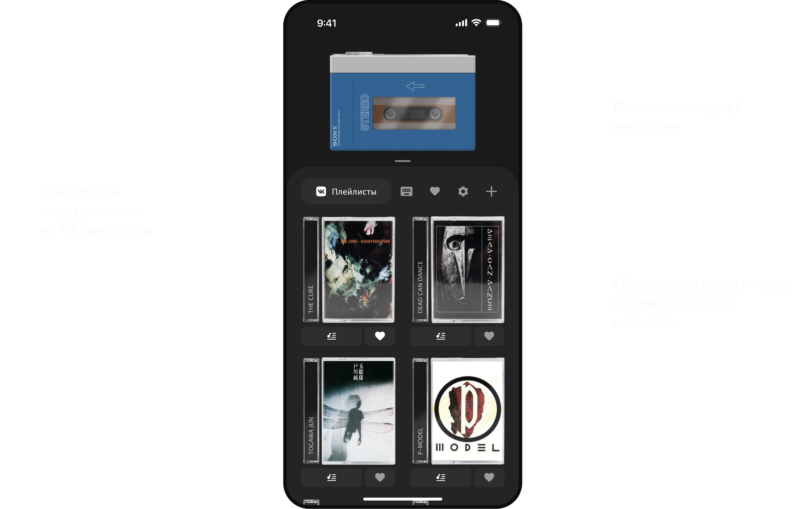
Настройка звука
Каждое устройство имеет собственный звуковой профиль, имитирующий реальное звучание соответствующего формата: шум ленты, треск винила, особенности цифрового звука.
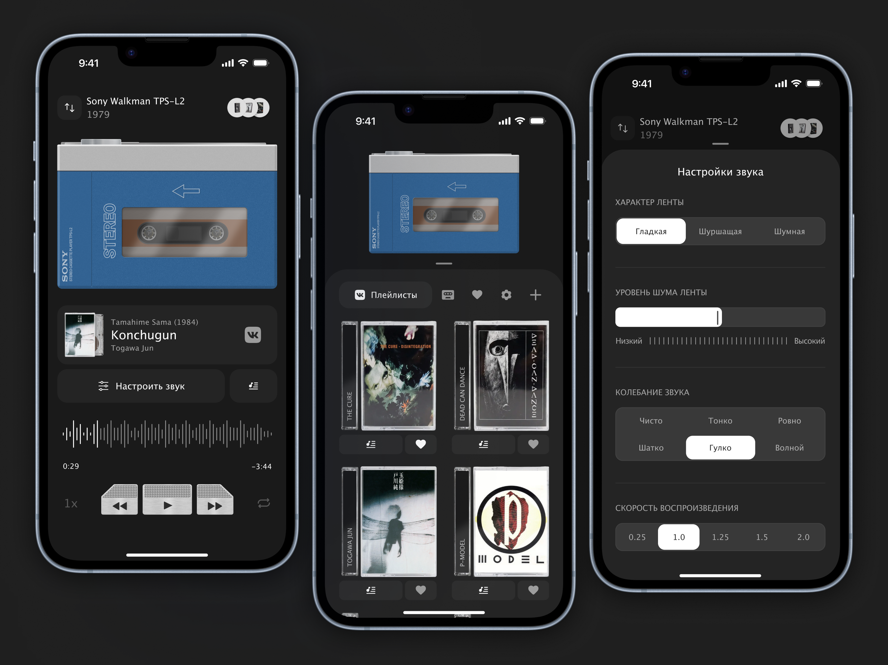
Подобным образом были оформлены экраны с другими устройствами.
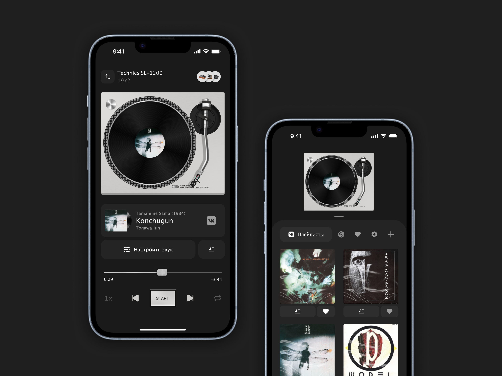
07.
Результаты
В результате был создан полноценный концепт мобильного музыкального плеера, который:
01
Объединяет несколько музыкальных эпох в одном продукте
02
Предлагает уникальный визуальный и звуковой опыт
03
Использует анимации как часть UX
Проект демонстрирует мой подход к:
Концептуальному дизайну.
Визуальному сторителлингу.
Работе с атмосферой и эмоциями.
Продуманному пользовательскому опыту.